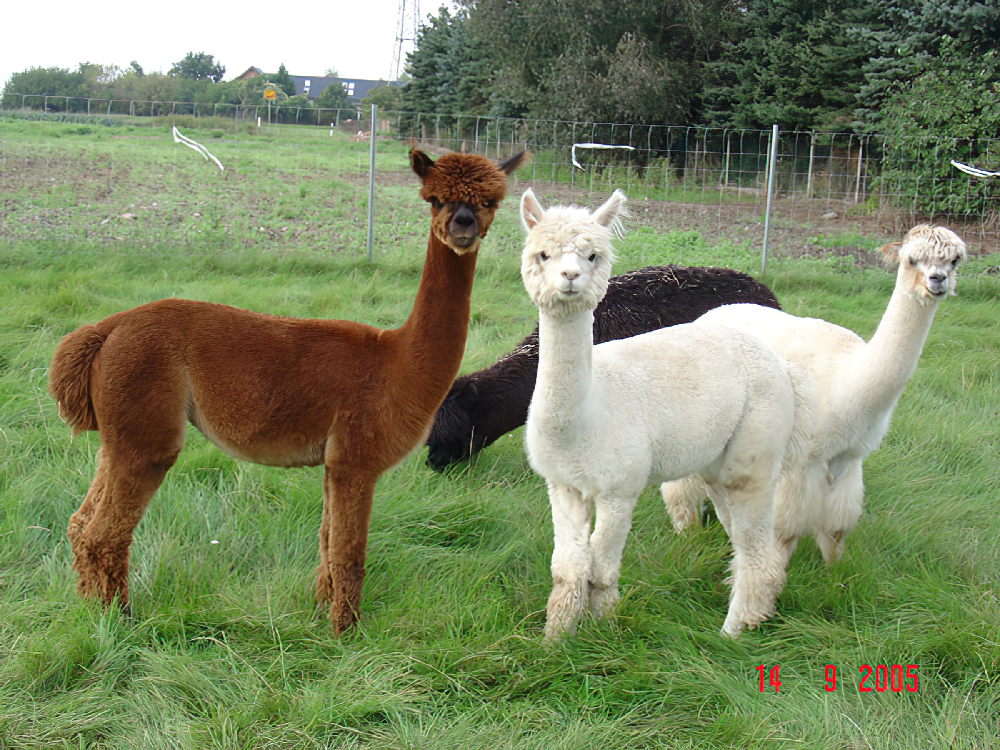
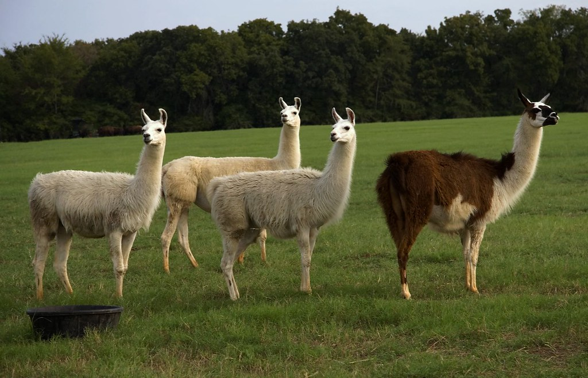

Visual Differences
Home
Purpose and History
Personalities
Visual Differences
The most-distinguishing physical differences between alpacas and llamas are their size, their hair, and their face shapes.
Alpacas
- Size: Around 35 inches high at the shoulder
- Weight: Between 121-143 lbs
- Facial Features: Small, blunt faces with short ears
- Hair: Shaggy hair from white and light yellows to browns and blacks

Llamas
- Size: Around 47 inches at the shoulder
- Weight: About 250 lbs
- Facial Features: Elongated faces with banana-sized ears
- Hair: Courser than the alpaca
